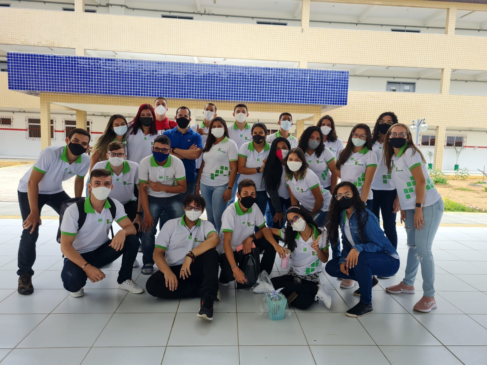
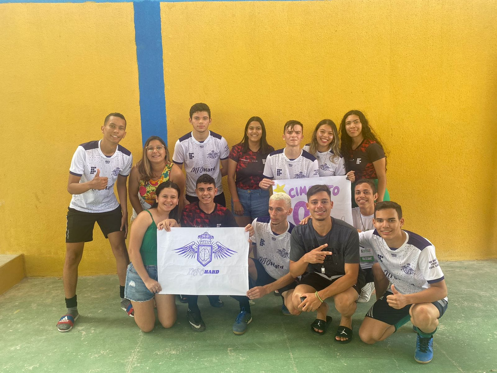
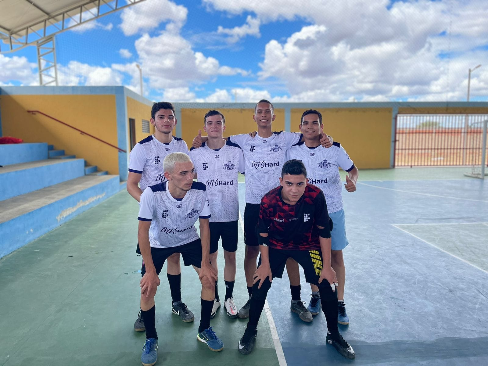
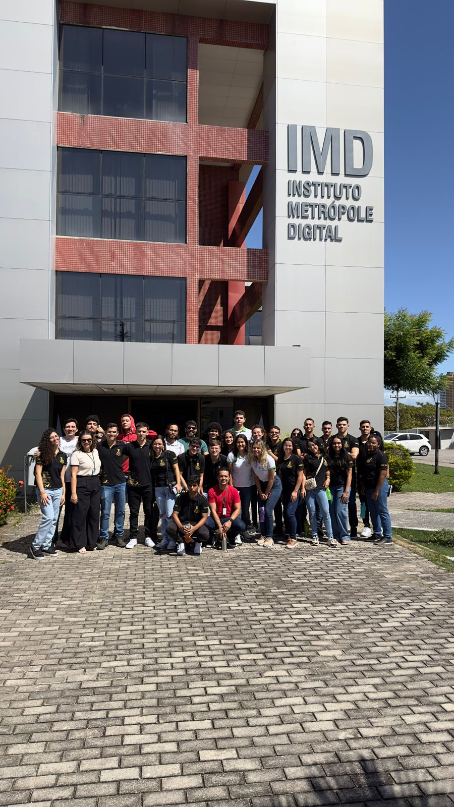
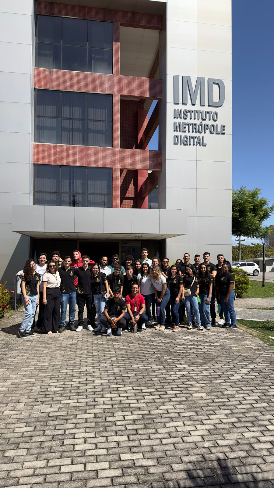

Minha Passagem pelo IFRN
Engressei no IFRN em 2020 para estudar o ensino médio integrado com o técnico em Informática. Escolhi essa área justamente por não saber de quase nada relacionado a um computador. Em 2020, com mais ou menos 1 mês de curso, veio a pandemia. Isso, sem dúvidas, afetou muito o modo de vida de todos ao redor, enquanto muitos diziam que iria ser somente 15/40 dias, na verdade se passaram 2 anos até que tudo voltasse ao normal. Meu 1° e 2° ano foram totalmente online, com algumas poucas aulas presenciais.
O 3°ano foi quando voltou a ter todas as aulas presenciais e pude finalmente disfrutar um pouco do IF, conhecendo os professores(as) e colegas que antes só os via por uma tela de computador. 
O um dos eventos mais marcante pra mim nesse ano foi a semadec. uma
semana de diversos esportes e jogos para os alunos e servidores do campus. Foi um momento de
"alívio" das provas e das aulas. Joguei fustal masculino aonde minha turma conseguimos ficar em 3° lugar e ganhar
medalha, Queimada masculina que, infelizmente, não conseguimos nos classificar, também participei de modalidades individuais do FIFA
e tênis de mesa, porém não consigui me classificar. Mesmo não sendo campeão de nada, pude desfrutar de
muita coisa.


No 4° ano
a primeira coisa que veio na cabeça todos os dias foi como eu iria concluir o IFRN sem ter pago a prática
profissional. Aos trancos e barrancos, consegui um projeto que ainda estou desenvolvendo.

Esse ano foi marcado também por coisas boas, como a viagem que fui com minha turma, esse , com certeza, foi um dos momentos mais especiais que tivemos no IFRN. Estavamos muitos ansiosos em para ter esse momentos só nosso pois muitas turmas já tinham viajado e a gente não. Aprendemos várias coisas e tivemos muitos momentos incríveis com os professores que a gente gosta.
.jpeg) 
